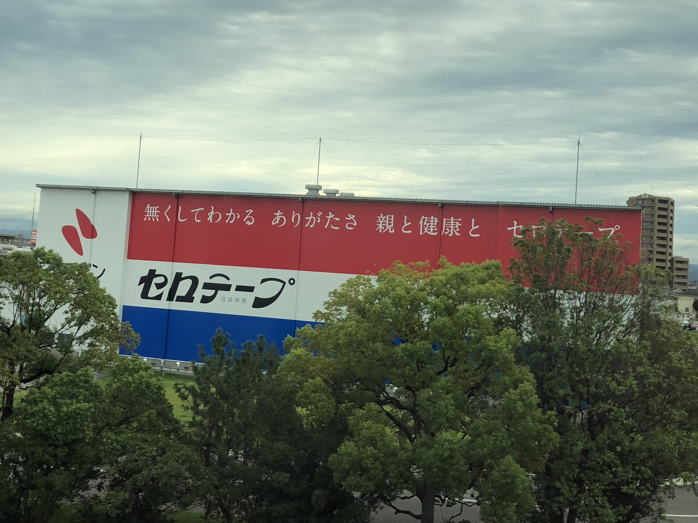
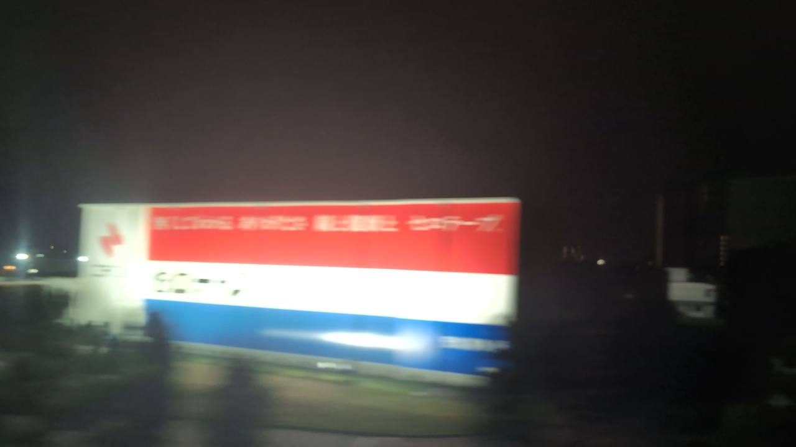

TOKAIDO SHINKANSEN WINDOW VIEW
セロテープの壁看板はいつ見える？座席側は？
巨大なセロテープ看板。

- 見える区間
- 三河安城付近
- 座席側
- E席・山側
- タイミング
- 東京発のぞみ基準で約85分後
- 写真
- 2 枚
地図でみる
この地点は簡易地図の座標調整中です。外部地図で位置を確認できます。
地図で見るセロテープの壁看板の見つけ方
東京から名古屋へ向かう列車では、三河安城の少し手前でE席側にニチバン安城工場の大きな壁看板が見えます。名古屋方面から東京へ向かう場合は、三河安城を出てすぐ。赤、白、青のセロテープ広告が工場の壁いっぱいに現れる、東海道新幹線らしい沿線の発見です。
東京から新大阪方面へ向かう場合は、三河安城付近が近づいたらE席・山側の窓を少し早めに見てください。新大阪から東京方面へ向かう場合は、通過順が逆になります。
東海道新幹線の車窓としてのポイント
セロテープの壁看板は、富士山だけではない東海道新幹線の車窓を楽しむための見どころです。列車の速度が速いため、見える時間は短く、天気や座席位置によって見え方が変わります。
写真で見るセロテープの壁看板
